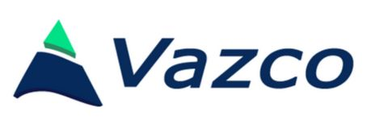

Vazco
Dynamicznie rozwijająca się firma, działająca we Wrocławiu od 2008 roku, zajmująca się budową customowych portali w technologii Meteor dla klientów z całego świata.
Vazco
Dynamicznie rozwijająca się firma, działająca we Wrocławiu od 2008 roku, zajmująca się budową customowych portali w technologii Meteor dla klientów z całego świata.

Bartłomiej Zapart
programista JavaScript, C# i PHP z dziesięcioletnim doświadczeniem komercyjnym w roli programisty m.in. w GG Network czy Microsoft.